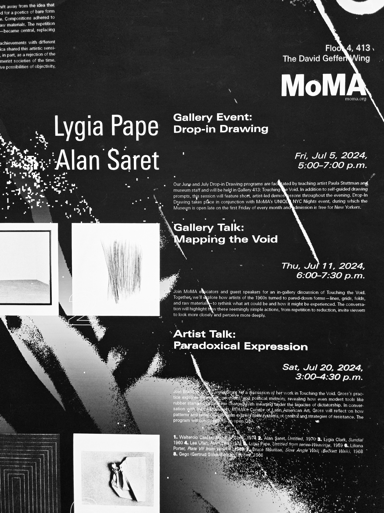
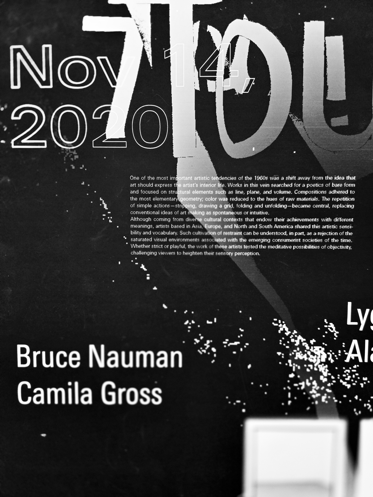
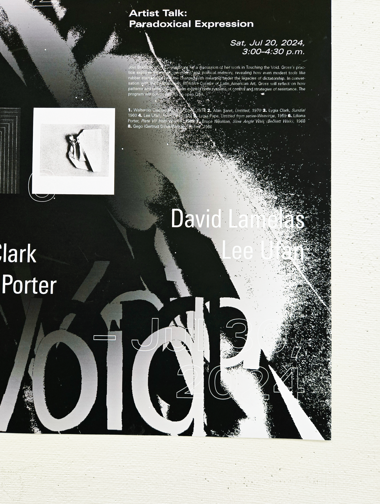
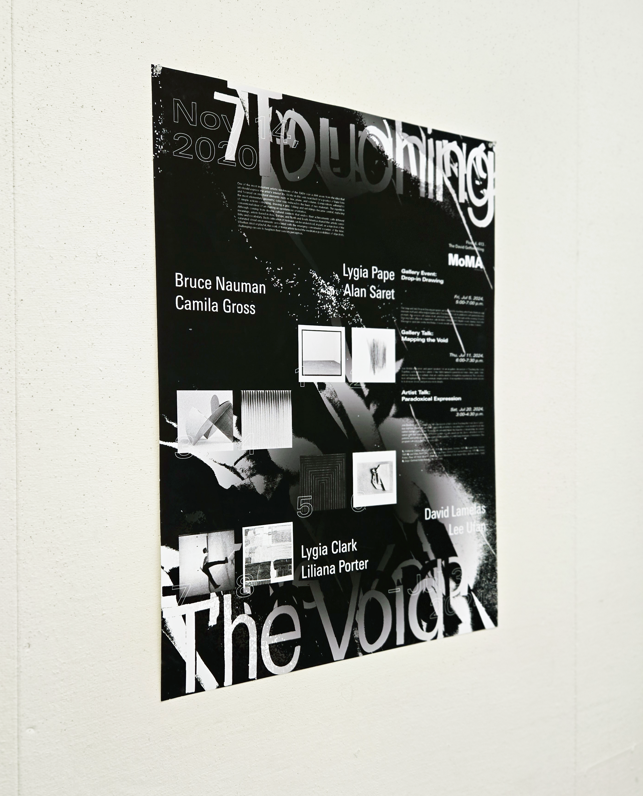
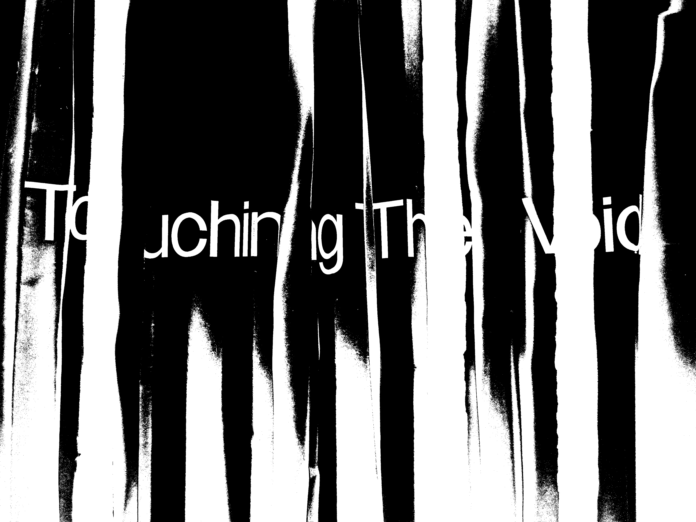
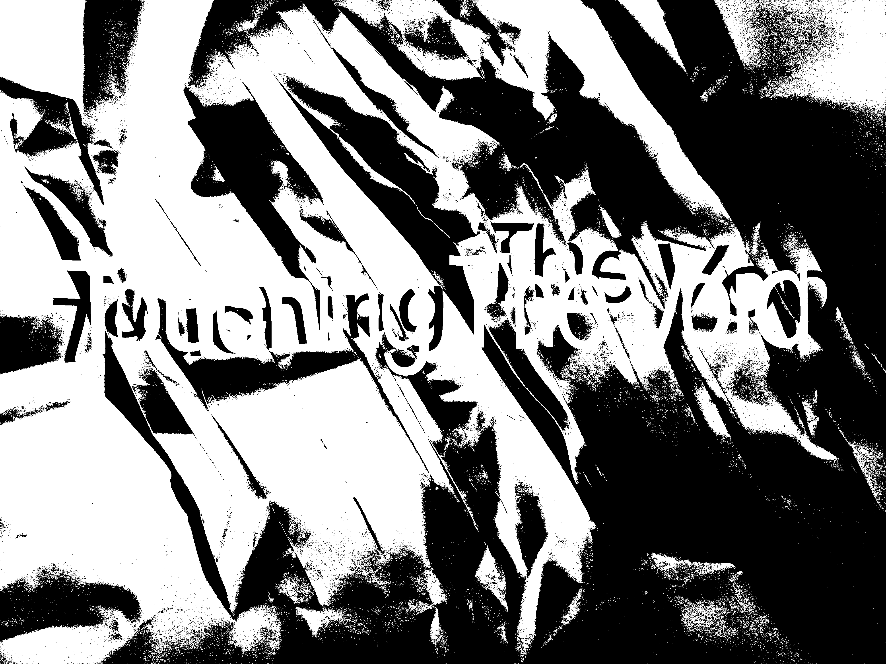
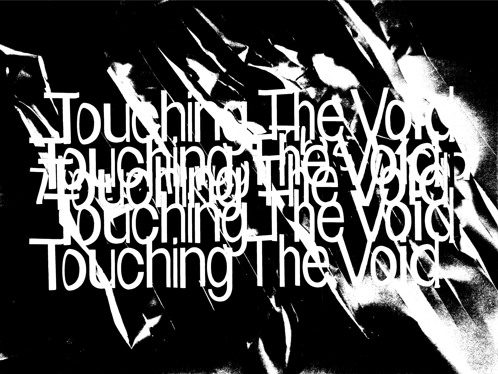
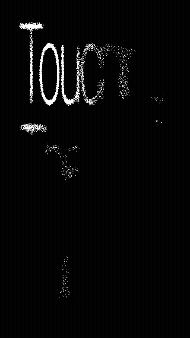

Touching The Void Exhibition Poster
Poster ✸ Design
Year
2025
Client
Typography II
Tools
InDesign, Photoshop
Skills
Grid-Based Layout, Type As Image, Digital Editing
This exhibition poster for Touching the Void at the Museum of Modern Art responds to the show’s emphasis on abstraction, bare form, and structural clarity.
Touching the Void was presented at the MoMA as part of an exhibition that explored mid-20th-century art’s shift from personal expression to structural clarity and the “poetics of bare form.” The installation was centered on geometry, reduction, and the investigation of line, plane, and volume, inviting viewers to engage with form through heightened sensory perception and objective observation rather than narrative or emotion.
In response to the exhibition’s emphasis on restrained abstraction and structural clarity, I treated the title itself as an image, developing a richly textural, grayscale interpretation of the letterforms.
By physically manipulating paper through tearing, cutting, and wrinkling, I generated expressive, organic values and forms, which I then refined digitally to enhance contrast and surface detail. This tactile image was set in deliberate contrast to the strict typographic grid of the supplementary information, establishing a tense dialogue between material experimentation and systematic structure.









Throughout the creation of this book, I immersed myself in the study of each historical style and integrated its distinct qualities into my own visual language. I aimed to let each typographic language express its full visual potential while thoughtfully relating each spread to what preceded and followed. This approach culminated on the sixteenth and seventeenth pages, where the interplay of both styles creates an aesthetic synthesis that conveys a shift in the consideration of ornament and form.